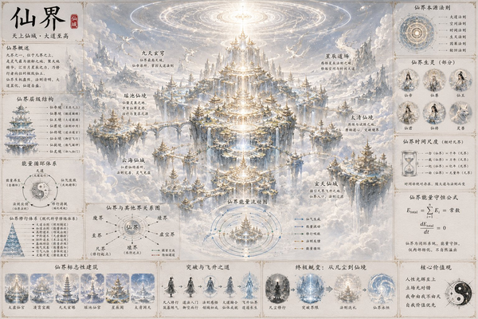

天上仙城 · 大道至高
仙界是修士飞升后的归宿。以道为尊，法则至上。表面祥和神圣，内里却暗流涌动——仙帝统御、仙域争霸、资源争夺从未停止。

| 仙位 | 境界 | 职能 | 备注 |
|---|---|---|---|
| 仙帝 | 大罗金仙巅峰 | 统领仙界，裁决仙域纷争，守护飞升通道 | 现任仙帝昊天，非世袭，由上一任指定或仙界大会推举 |
| 仙君 | 金仙巅峰 | 一仙域之主，执掌仙域事务 | 九大仙域各有仙君坐镇 |
| 仙人 | 真仙/玄仙/金仙 | 仙界中坚力量，分管各界事务 | 数量最多，构成仙界主体 |
| 仙侍 | 天仙 | 服务仙官、仙帝的底层仙人 | 多为飞升初期修士 |
| 灵兽/仙禽 | — | 仙帝坐骑、仙宫守卫 | 通灵性，可辅助作战 |